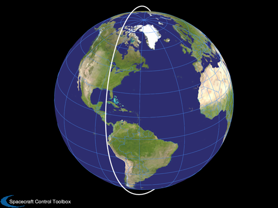
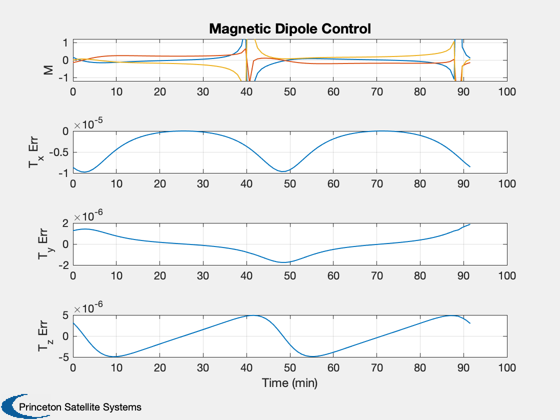
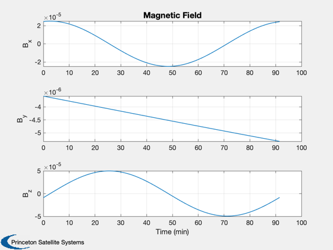

Magnetic control demand analysis
Put a satellite aligned with LVLH (nadir-pointing) in a 350 km inclined orbit and evaluate the ability of the magnetic control to create a particular torque along the orbit. There are 3 orthogonal torquers. Note that the pure x torque can only be created at certain points along the orbit.
------------------------------------------------------------------------ See also: MagneticControl, RVFromKepler, PlotOrbit, Date2JD, TimeLabl, Mag, Cross, Plot2D
Contents
%-------------------------------------------------------------------------- % Copyright (c) 2011-2012 Princeton Satellite Systems, Inc. % All rights reserved. %-------------------------------------------------------------------------- % Since version 10. %--------------------------------------------------------------------------
Set up orbit and torquer model
% Three orthogonal torquers u = eye(3); % Define the orbit jD0 = Date2JD([2014 6 1 0 0 0]); el = [6378+350,0.9*pi/2,0,0,0,0]; [r, v, t] = RVFromKepler( el ); n = size(r,2); PlotOrbit(r,t,jD0); % Point the satellite along nadir q = QLVLH( r, v ); % Compute the B field using a simple dipole model jD = jD0 + t/86400; b = QForm( q, BDipole( r, jD ) ); % Specify an x-axis torque demand tDemand = 1e-5*[1;0;0]; % Nm
Evaluate the magnetic control demand
m = zeros(3,n); tErr = zeros(3,n); gamma = zeros(3,n); for k = 1:n [m(:,k), tErr(:,k)] = MagneticControl( b(:,k), tDemand, u, 10 ); gamma(:,k) = Mag(Cross(u,b(:,k)))'; end [t, tL] = TimeLabl( t ); yL = {'M','T_x Err' 'T_y Err' 'T_z Err'}; Plot2D( t, [m;tErr], tL, yL, 'Magnetic Dipole Control','lin',{[1 2 3],4,5,6}); subplot(4,1,1); y = axis; axis([y(1:2) -1.2 1.2]) yL = {'B_x' 'B_y' 'B_z'}; Plot2D( t, b, tL, yL, 'Magnetic Field'); fprintf(1,'Average error = %12.4e Nm\n',mean(tErr,2)); %--------------------------------------
Average error = -3.3182e-06 Nm Average error = -1.7550e-09 Nm Average error = 2.7419e-08 Nm 